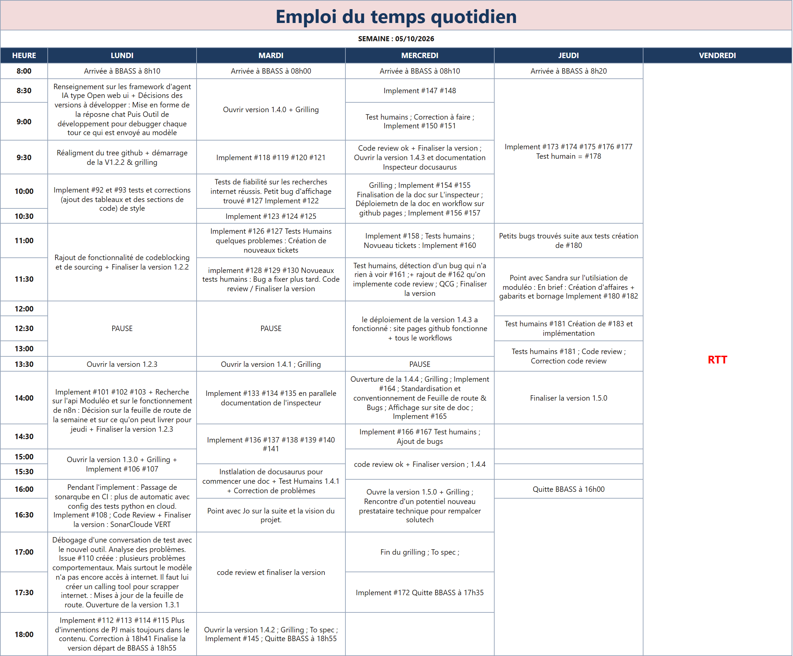

Alternance Agents IA · 2026–2027
Point jeudi 8 octobre — visé : V1.5.0 · livré : V1.5.0
Ctrl+Maj+D, débloqué par la Clé d’administration VM (jamais stockée) ; lecture de toutes les conversations ; chaque appel Mistral réel (chat, titrage, résumé, OCR, vision, outils) avec payload, réponse et succès/échec.Versions livrées depuis le bilan précédent.
Jusqu’ici, les réponses du chat manquaient d’un ton stable et s’affichaient en texte brut. Cette version fixe un style professionnel pour l’IA : vouvoiement, réponses directes sans remplissage, emojis seulement quand ils portent un vrai signal, pas de question de relance systématique en fin de message.
Dans le chat, les réponses s’affichent désormais de façon structurée : mise en forme (gras, listes), blocs de code avec coloration selon le langage, et liens cliquables vers les sources citées — pour une lecture claire, adaptée au travail quotidien du cabinet.
Changer d’écran ou rouvrir une conversation était perçu comme trop lent au quotidien. Cette version garde le contenu déjà vu à l’écran pendant le rafraîchissement, et pour une conversation longue n’envoie d’abord que les messages les plus récents : l’historique plus ancien se charge en remontant le fil, comme dans ChatGPT.
Une instrumentation de temps légère (désactivée par défaut) permet de mesurer où passe le temps à l’ouverture d’une conversation, du Profil ou du Panel d’administration — utile pour la suite du développement, sans rien changer pour un usage courant.
Jusqu’ici, on ne voyait dans l’interface que le message du collaborateur et la réponse affichée. Impossible de comprendre après coup pourquoi l’IA avait répondu ainsi : le prompt réel, le résumé, le profil de travail ou un appel en échec restaient invisibles.
Le Mode développeur (Ctrl+Maj+D) ouvre un onglet inspecteur, débloqué par la Clé d’administration VM. On peut parcourir les conversations de tous les comptes et déplier chaque appel Mistral (chat, titrage, résumé, OCR, vision, outils) : ce qui a été envoyé, ce qui est revenu, succès ou échec. Lecture seule, historique seulement — un outil de développement et de contrôle qualité, pas un écran métier du quotidien.
Après la V1.3.0, un essai manuel montrait encore des rapports, chiffres et liens inventés, puis repris comme faits dans le résumé et le profil. Cette version resserre les consignes du chat, plafonne le résumé glissant, réécrit le profil en entier, et ajoute des garde-fous côté VM : retrait des URL non écrites par le compte, et contrôle des chiffres hors source.
Outil de recherche internet exécuté par la VM : le modèle trouve une page réelle au lieu d’en inventer l’adresse. SearXNG auto-hébergé (sans clé ni quota), lecture des pages entières, extraction isolée du contexte de conversation, outils centralisés, boucle sur trois tours, inspecteur chronologique. Seules les URL et les chiffres provenant des pages lues restent dans la réponse.
Livrée avec un bug connu (#131) : si la recherche ne trouve rien d’utile, l’IA peut encore inventer — correction reportée en « Plus tard ».
Jusqu’ici, une pièce jointe disparaissait dès le tour suivant, une recherche ne laissait que sa requête, et une URL envoyée par le collaborateur ne survait que si le résumé la gardait. Cette version envoie à chaque appel de chat la liste de tout ce qui a été partagé dans le fil — pièces jointes, recherches, URL du collaborateur — avec un aperçu de questions couvertes.
L’IA peut relire une ou plusieurs pièces jointes, relire une page déjà trouvée sans la retélécharger, ou lire une URL que le collaborateur a envoyée. La boucle d’outils passe à cinq appels par message. Aucun changement d’interface côté poste.
Les pages web trop longues étaient plafonnées avec une estimation grossière. Cette version mesure la taille des pages avec le vrai compteur du modèle : une page trop lourde n’est plus relue, et l’assistant répond honnêtement plutôt que de tronquer au hasard.
Sous le champ de saisie, une jauge indique à quel point le dernier envoi a rempli la fenêtre du modèle — pour anticiper les conversations qui deviennent trop longues.
Une page déjà lue était retéléchargée à chaque conversation, une page en échec ne pouvait plus être retentée, et une page lue restait figée même si le collaborateur disait qu’elle avait changé.
Désormais, une page lue avec succès dans la journée est réutilisée pendant 24 heures, y compris dans une autre conversation. Une page qui n’avait pas pu être lue est retentée plus tard. Si le collaborateur demande une relecture, la page est relue et ce que l’on en savait déjà est revérifié ; en cas d’échec, l’assistant le dit et s’appuie sur la version datée.
Jusqu’ici, le fil affichait « Réflexion… » pendant toute la préparation de la réponse, alors qu’un tour peut comprendre plusieurs recherches, des pages lues et des documents relus. Le collaborateur ne savait pas si l’assistant avançait ou était bloqué. Désormais, le fil affiche l’étape en cours : « Recherche sur le web : “…” », « Lecture de <site> », « Relecture de <document> », « Vérification de la réponse… ». La réponse finale reste vérifiée avant de s’afficher.
Changer de conversation pendant une réponse affiche bien la conversation choisie ; on retrouve l’étape en cours en revenant, et la conversation en attente est signalée dans la liste. Un message envoyé ailleurs pendant ce temps est mis en attente, et l’assistant l’annonce. Si l’onglet est fermé, la réponse se termine quand même et se retrouve en rouvrant la conversation.
Jusqu’ici, pour connaître l’état d’une affaire, ses intervenants ou les coordonnées d’un contact, il fallait quitter le chat et ouvrir Moduléo. Désormais, l’assistant consulte Moduléo lui-même, en lecture seule, pour tous les comptes : il retrouve des affaires par numéro, nom, état, période, responsable ou chargé d’affaire (les plus récentes d’abord, celles des 90 derniers jours si aucun critère n’est donné), et des contacts avec leurs coordonnées et les affaires où ils apparaissent.
Ce qui a été lu dans Moduléo reste fiable dans toute la conversation : numéros, dates et téléphones ne sont pas retirés de la réponse, la source « Moduléo, affaire … » est citée, et l’assistant peut y revenir plus loin dans le fil. Si Moduléo est indisponible ou refuse l’accès, l’assistant le dit simplement. L’accès Moduléo est une clé unique dédiée au cabinet, protégée, jamais montrée à l’IA ni dans l’inspecteur. Rien n’est jamais écrit dans Moduléo.
